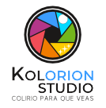

Este proyecto es una demo-experimental, la idea es poder transformar cualquier espacio en un "Tabernáculo de Realidad Aumentada (AR)", por esto estamos buscando financiamiento para crear un museo interactivo AR que pueda ser usado en cualquier espacio Adventista (iglesia, parque, etc) por medio de códigos QR.
Si quieres apoyarnos puedes patrocinarnos mensualmente por medio de https://patreon.com/kolorionstudio o pago único con tarjeta debito/credito
© KolorionTV. Prohibida su reproducción.
